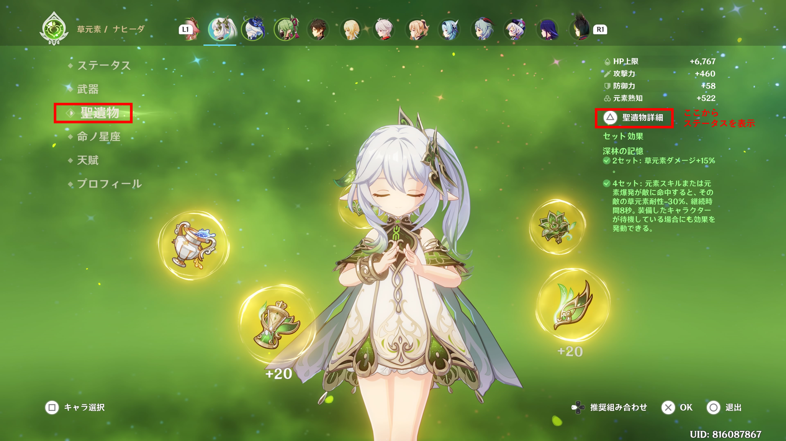
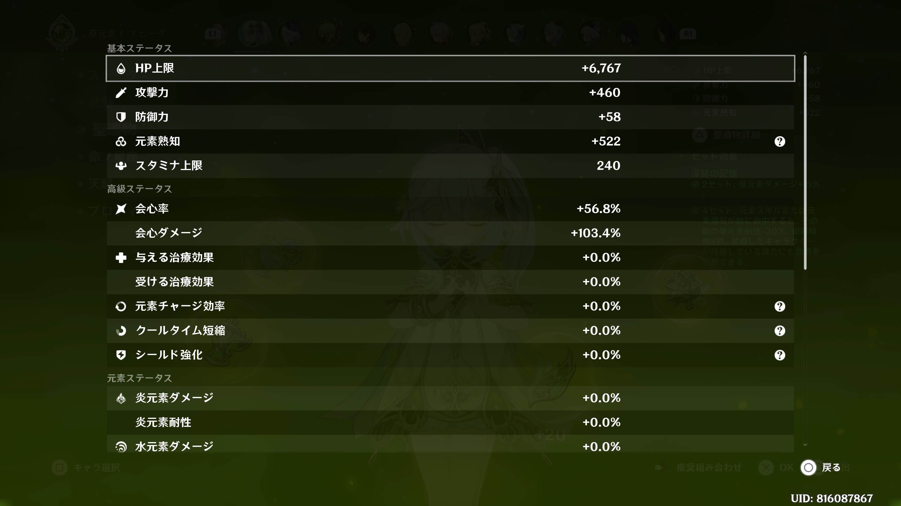
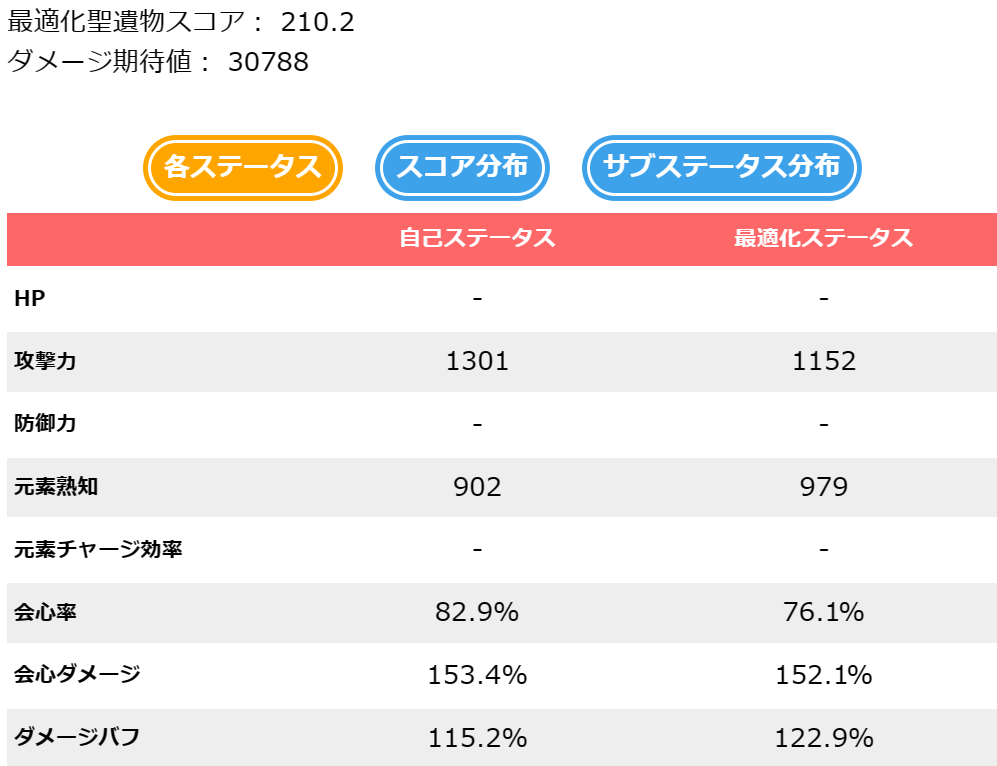
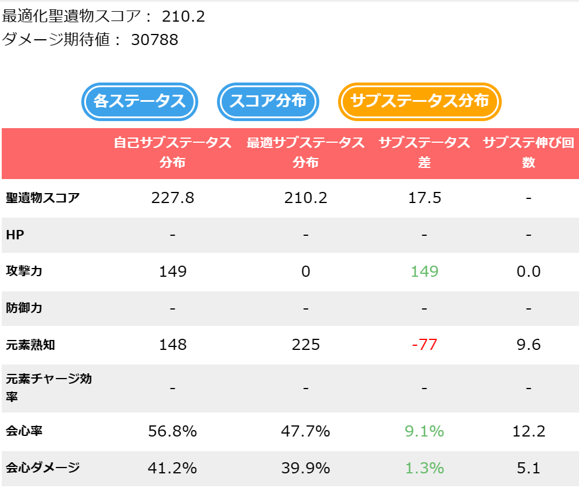

はじめに、キャラクターと武器及びそれぞれのレベル、命の星座、精錬ランク等を選択してください。固有天賦２が解放される60レベル突破済を想定しているため、60+から選択できます。また参考にしたデータ（原神wiki）からレベル10ごとにしか選択できません。正確なレベルが選択できない場合には最も近いレベルを選択してください。計算に誤差が生じますが、スコア計算に大きな影響はありません。
次に攻撃方法を選択してください。本サイトでは攻撃方法ごとに最適なステータスを計算する仕様となっています。コンボを考慮した最適ステータスを計算することはできないので予めご了承ください。（要望が多い場合には実装を検討します。）
元素反応は選択した攻撃中に起こす反応を選択してください。元素反応は反応箇所の影響が大きい蒸発、溶解反応とその他に分かれています。元素反応を考慮する場合には下図の①を「反応あり」に変更し、蒸発、溶解を考慮する場合には図の②から選択してください。①が「反応あり」となっていない場合には蒸発、溶解反応は考慮されない点にご注意ください。
聖遺物のセット効果は、聖遺物画像をタップすると選択できます。4セットの場合には、同じ種類の聖遺物画像を2回タップしてください。
聖遺物の種類を選択したら、時計、杯、冠のメインステータスを選んでください。メインステータスが正しくない場合、計算に影響を及ぼします。（最適化スコアが220点を超えている場合は確認してみてください。）聖遺物は全てLv.20で計算しています。
聖遺物による上昇ステータスや味方のバフを入力する項目です。聖遺物ステータス上昇の項目では聖遺物選択画面から見られるステータス画面の数値を入力してください。バフの項目では、チーム内の味方からのバフ量を選択してください。聖遺物ステータス上昇の項目は未入力のステータスがある場合には計算できないので上昇量が0でも入力してください。
 選択したキャラクター、武器および聖遺物のバフを設定できます。また項目を切り変えることで、元素共鳴と敵ステータスの詳細設定が可能です。バフやデバフを適切に設定してください。単体の元素もしくは物理攻撃しか影響しない場合は、耐性や防御を設定しなくても最適化スコアの計算結果は変わりません。
以上のステップを踏んだ後、「スコア計算開始」ボタンをタップしてください。最適化スコアと最適化ステータスが表示されます。項目を切り替えることで自身のステータスとの差を確認することができます。
 